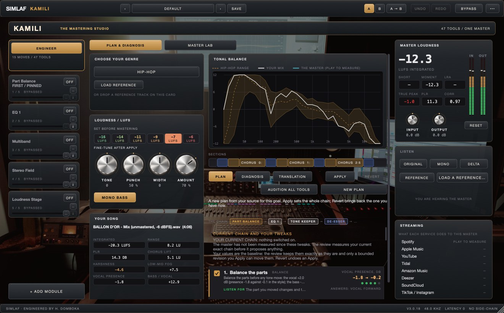
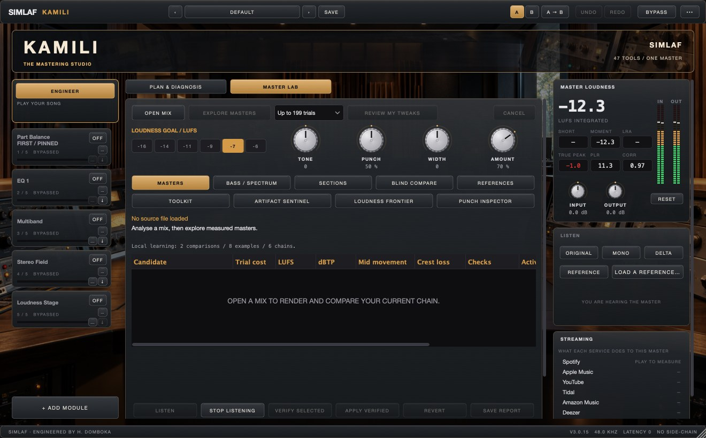

Choose the destination.
Work towards a genre range or load a reference. Choose one of six loudness goals from −16 to −6 LUFS, then guide tone, punch, width and processing amount.
SIMLAF · Black Friday launch
The store opens on Black FridayPlanned opening ·
Save your cart. Checkout opens at launch.
KAMILI · Intelligent mastering
Whole-song diagnosis, competing rendered chains and full-song verification. Use 47 modules and local preference learning to shape the master, hear the difference and make the final decision.

From the source to a reasoned plan
The mastering engine measures tonal balance, loudness, true peak, stereo behaviour, resonances and the changes between sections. It builds a diagnosis of the problems and the strengths worth protecting, then explains what each proposed move answers.
Work towards a genre range or load a reference. Choose one of six loudness goals from −16 to −6 LUFS, then guide tone, punch, width and processing amount.
Part Balance can adjust vocal, drums, bass and the remaining music inside a stereo mix, with per-part EQ. Prepared stems give it separately supplied parts to work with.
Inspect the proposed modules and their explanations. Adjust their native controls, compare your current chain and return to the previous complete state with Revert.
Diagnosis distinguishes problems from strengths. The house rules guide the plan around deep-bass weight, transient shape, harshness, sibilance and the lift between sections.
Master Lab · Render. Compare. Verify.
Master Lab renders actual alternative chains on contrasting excerpts, compares measured outcomes and refines the candidates. The selected settings must pass complete-source verification before Apply is enabled.

Explore different module choices, combinations, processing orders and omissions. The trial count depends on the search mode and current chain; using more modules is not the objective.
Verification considers delivery loudness and peak, bass-linked movement, crest loss and section contrast. An excerpt’s result is not presented as a verified whole-song result.
Level-matched listening, a difference audition and blind A/B comparison help you assess the change. Blind comparisons hide identities until reveal and require both sides to be auditioned before voting.
Artifact Sentinel, Punch Inspector and Loudness Frontier expose additional diagnostics. Reports preserve candidate measurements and listening choices. A lower measured cost is not a universal score for musical quality.
Local learning · Your choices carry forward
Your listening preferences can adjust the measured selection criteria. Local examples guide tone, punch, width and amount for similar sources, while Learn My Chain remembers the actual settings, bypass choices and order of a chain you want to revisit.
Save the comparison you actually chose.
Retain up to 64 local chain examples.
Analyse, render and learn on your machine.
The mastering intelligence combines measured analysis, explained planning, rendered alternatives and local preference learning. Settings remain editable and the final listening decision stays with you.
The complete working toolkit
From Part Balance and three independent EQ roles to bass coordination, spectral shaping, circuit colour, loudness and finishing. Every module has a native control page; the Codex explains its purpose, controls and place in the chain.
47 mastering modules
Turn vocals, drums and bass up or down inside the mix, and EQ each
Restore transients and dynamics to over-limited audio
The static tone: twenty bands, every curve and shape
Hand-drawn mastering curve
Match the tonal balance of a reference
Resonance control and spectral dynamics
Keeps the tonal balance inside the SIMLAF range; resonances and clarity
Multiband compression and expansion
Bus compressor
Focus, tighten, mono and translate the low end
Four-band micro-dynamics
Tame sibilance
Harmonic excitement
Mastering tape machine
Tube, console and graphic equalisers
Stereo width, mono bass and correlation
Multi-stage loudness maximizer
True-peak limiter
Note-aware bass weight and tail control
Separate attack and body shaping across four regions
Sustained stereo ambience diffusion with a fixed mono center
Persistent center detail shaped by spectral occupancy
Cross-region low-mid masking control with protected attacks
Density-aware treble softening with attack protection
Correlation-aware bass-side stability with a preserved mono fold
Adaptive recall of the song’s own tonal proportions
Bounded detail recovery between attacks with silence protection
Fourfold bass harmonic inference with bounded partials
Sustain-aware side ambience focus with an unchanged mono fold
Bass-onset control of competing low-mid sustain
Band crest control that preserves fresh attacks
Relative spectral motion control that ignores common level changes
Neighbour-aware narrow resonance control with 24 linked resonators
Coherence-gated bass harmonic ladder with a preserved dry fundamental
Event and slope-aware shaping of post-attack decays
Adaptive cohesion with peak, RMS, memory and bass-cycle inference
Independent onset, selected body and decay control in parallel
Sustained 2-5 kHz control with contextual detection and onset reserve
Deep bass bloom, cycle-slow sustain and optional coherent sub support
Reserve low-mid space around protected sub cycles and attacks
Event-conditioned upper-bass clearance with a protected first attack and deep fundamental
Wire-audio event/cycle audit and explicitly rendered final-stage recovery proposals
Six-band colour, dynamics, feedback and editable modulation
Stage-conditioned sustained edge relief, protected attacks and small-speaker body
Bounded sustained side detail with a preserved mono center
Bands that move only when their region rises
Mid and side moves: air, sizzle, clutter and sub where they live
No matching module. Try a different word.
From the mix to the delivery
Measure tonal balance, loudness, peaks, stereo behaviour, resonances and changes between sections. Read the findings and the strengths the plan aims to protect.
Render alternative processing chains on contrasting excerpts, refine the choices and verify the selected settings across the complete source before applying them.
A re-orderable toolkit from Part Balance and restoration through tone, dynamics, low-end coordination, colour and space to loudness and finishing. Part Balance stays first.
Choose a genre range or analyse a reference track. Compare matching section roles and energy rather than relying on a single average curve.
Choose −16, −14, −11, −9, −7 or −6 LUFS before mastering, then guide tone, punch, width and amount. Loudness is a delivery choice, not a quality score.
Listening choices adjust measured selection criteria. Local mix/master examples guide the controls for similar measured sources.
Retain up to 64 local examples of exact module settings, bypass choices, gains and order. Audition an appropriate learned chain for another source.
Audition candidates at a common loudness, inspect the difference and compare blind A/B choices with identities hidden until reveal.
Adjust vocals, drums, bass and the rest inside a stereo mix, with per-part EQ. Prepared stems let those moves act on separately supplied parts.
Inspect detected song structure and edit section boundaries, gain, bass, air and width. Section controls participate in rendering at their original musical times.
Explore Bass Headroom Allocator, Kick-Bass Negotiator, Recovery Guard, Final Calm, Spatial Weave and the complete native toolkit, each with its own purpose and controls.
Artifact Sentinel, Punch Inspector and Loudness Frontier add measured evidence around candidate decisions. Save reports with candidate measurements and listening choices.
Keep up to six references, compare at matched loudness, and inspect modelled playback-device behaviour. Translation scores guide audition rather than guarantee playback on every device.
Audition platform normalisation and codec changes without committing monitoring effects into the exported master. Some codec formats require an available external encoder.
Export WAV, AIFF or FLAC. Album mode processes songs individually under a common intent and can write separate masters, an ordered stereo sequence and a JSON track manifest.
Edit the actual module chain, compare A/B, apply a verified state or revert the complete previous chain. AU, VST3 and standalone workflows remain available.
The neutral starting state reports zero latency. Part Balance Live quality adds 10.7 ms or Master quality 48 ms when enabled; other latency-bearing modes report their own delay.
KAMILI · The mastering studio
The store is not open yet. Add it to your cart now and it is still there when checkout opens.
Existing purchased licences and promised collection rights remain unchanged.
AU, VST3 and standalone. Native interfaces shown from verified development captures. A neutral starting chain reports zero latency; activated processing modes report their own delay. The store-opening banner shows current purchase availability.